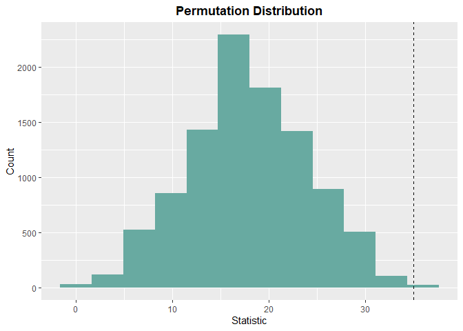

The goal of LearnNonparam is to conduct non-parametric tests (mostly based on permutations).
Installation
You can install the development version of LearnNonparam from GitHub with:
# install.packages("devtools")
devtools::install_github("qddyy/LearnNonparam", dependencies = TRUE, upgrade = "never")
Downloading GitHub repo qddyy/LearnNonparam@HEAD
Error in utils::download.file(url, path, method = method, quiet = quiet, :
cannot open URL 'https://api.github.com/repos/qddyy/LearnNonparam/tarball/HEAD'Example
library(LearnNonparam)-
Create a test (for example, a
Wilcoxonobject)t <- Wilcoxon$new(type = "permu", n_permu = 10000)or you can use
pmt(permutation test) function (Recommended):# See ?pmt t <- pmt("twosample.wilcoxon", type = "permu", n_permu = 10000) -
feed it the data (
data.frame|list|vector)t$feed(Table2.6.2) -
check the results
print(t$statistic) [1] 35 print(t$p_value) [1] 0.0015 print(t$estimate) [1] 6 print(t$ci) [1] 3 9 t$plot_hist(bins = 12)
-
modify some attributes and see how the results change
t$type <- "approx" print(t$p_value) [1] 0.008239019
Help
Just use ?... syntax.
If you want to know all available methods and attributes, it’s a good idea to explore ?PermuTest (all tests’ base class) first.
If you want to know all available tests, see pmts().
pmts()
key test
1 onesample.quantile Quantile Test
2 onesample.ecdf Empirical Cumulative Distribution Function
3 twosample.mean Two Sample Permutation Test (mean)
4 twosample.wilcoxon Two Sample Wilcoxon Test
5 twosample.scoresum Score Sum Test
6 twosample.ansari Ansari-Bradley Test
7 twosample.siegel Siegel-Tukey Test
8 twosample.rmd Ratio Mean Deviance Test
9 twosample.ks Two Sample Kolmogorov-Smirnov Test
10 ksample.anova ANOVA
11 ksample.kw Kruskal-Wallis Test
12 ksample.jt Jonckheere-Terpstra Test
13 multicomp.t Multiple Comparison (t test)
14 multicomp.tukey Tukey HSD
15 paired.comparison Paired Comparison
16 paired.sign Sign Test
17 paired.signedscore Signed Score Test
18 rcbd.anova ANOVA for Randomized Complete Block Design
19 rcbd.friedman Friedman Test
20 rcbd.page Page Test
21 association.corr Two Sample Permutation Test (correlation coefficient)
22 table.chi Contingency Table Permutation Test (chi-square)